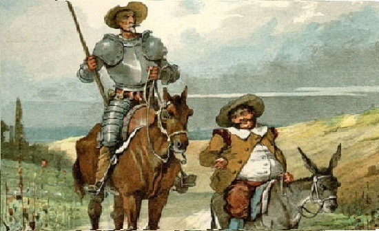

Principal aquí

En un lugar de la Mancha, de cuyo nombre no quiero acordarme, no ha mucho tiempo que vivía un hidalgo de los de lanza en astillero,
adarga antigua, rocín flaco y galgo corredor. Una olla de algo más vaca que carnero, salpicón las más noches, duelos y quebrantos los sábados,
lantejas los viernes, algún palomino de añadidura los domingos, consumían las tres partes de su hacienda. El resto della concluían sayo de velarte,
calzas de velludo para las fiestas, con sus pantuflos de lo mesmo, y los días de entresemana se honraba con su vellorí de lo más fino.
Tenía en su casa una ama que pasaba de los cuarenta y una sobrina que no llegaba a los veinte, y un mozo de campo y plaza que así ensillaba el rocín
como tomaba la podadera. Frisaba la edad de nuestro hidalgo con los cincuenta años. Era de complexión recia, seco de carnes, enjuto de rostro, gran madrugador
y amigo de la caza